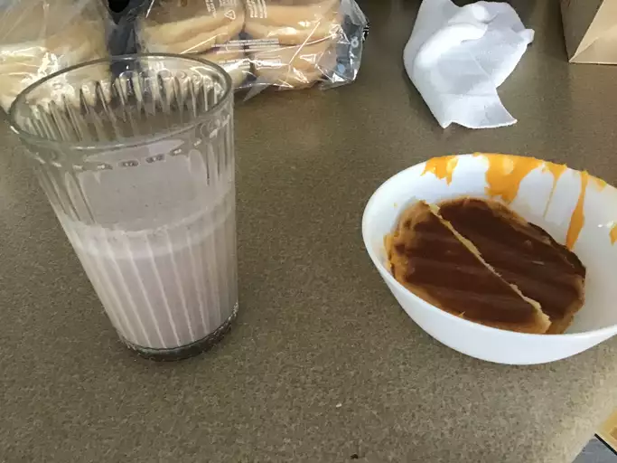

Everyone needs to know how to make a classic grilled cheese sandwich. Whether you're a beginner cook or an old pro, you'll come back to this top-rated grilled cheese recipe again and again.
This classic grilled cheese sandwich recipe calls for just white bread, sliced cheese, and butter. It's easy to switch up the bread and cheese to suit your taste preferences and, if you like, you can substitute mayonnaise for butter.
This recipe calls for sliced Cheddar, which is a wonderfully crowd-pleasing cheese. You can use sharp Cheddar, mild Cheddar, or a blend of both. Another classic choice is plain ol' sliced American cheese – it tastes nostalgic and gives you a gorgeous cheese pull.
This recipe calls for plain white sandwich bread. You could also use sourdough, brioche, or even ciabatta. You can really make grilled cheese with any type of bread you like, but you should make sure the loaf is sturdy enough to handle the heat. Thinly sliced, delicate breads will quickly fall apart.
Here's a very brief overview of what you can expect when you make homemade lasagna:
Step 1
Preheat a nonstick skillet over medium heat. Generously butter one side of a slice of bread. Place bread butter-side down in the hot skillet; add 1 slice of cheese. Butter a second slice of bread on one side and place butter-side up on top of cheese.
Step 2
Cook until lightly browned on one side; flip over and continue cooking until cheese is melted. Repeat with remaining 2 slices of bread, butter, and slice of cheese.
